О проекте
Оглавление
- Введение
- Клиент
- Предыстория
- Проблемы
- Цели
- Позиция
- Акценты
- Концепция №1
- Концепция №2
- Погружение в контекст
- Проектирование
- Дизайн
- Онлайн-запись
- Вёрстка и сборка
- Результат
- Благодарности
Введение
Чудо — весьма относительное понятие. Всё то, что казалось сказочным и волшебным в детстве, давно стало привычным и неудивительным. Например, снегопад для нас, взрослых, совсем не повод для искренней радости, а проблема — нужно убрать снег, одеваться теплее, да и такси подорожает. Даже с Дедом Морозом вполне обыденные проблемы: если ваши дети ждут его в гости в канун Нового года, то заказывать такой визит следует до конца ноября, пока аниматоры и актёры ещё принимают заявки.
Но есть чудеса, которые не зависят ни от возраста, ни от веры в волшебство. Самое чудесное событие за последние 5 лет случилось со мной в марте 2018 года — мне за несколько минут восстановили зрение, и я вновь вижу мир чётко и ярко, без близорукого прищура и контактных линз. Я носил очки постоянно 20 лет подряд, и ещё месяц после коррекции искал их каждое утро, и каждый раз смеялся в голос, вспоминая,что больше они не нужны. Это ли не чудо?
Трудно передать чувство благодарности тех, кто испытал чудо исцеления, к тем людям, чей труд и творит эти чудеса. Отблагодарить соразмерно ещё труднее.
Но жизнь — интересная штука, и такой шанс представился не только мне, но и всей команде NUTS Digital.
Клиент
Начнём с полного наименования: Федеральное государственное автономное учреждение "Национальный медицинский исследовательский центр «Межотраслевой научно-технический комплекс „Микрохирургия глаза“ имени академика С. Н. Федорова»" Минздрава России.
Есть и более известные и привычные названия: МНТК, микрохирургия глаза, центр Фёдорова, клиника Фёдорова.
МНТК — одна из самых передовых офтальмологических клиник в мире. В 11 филиалах по всей России диагностирую и лечат заболевания глаз, ведут научную и образовательную работу.
Немного статистики:
- за 35 лет проведено 842 000 офтальмологических операций
- 33% всей офтальмологической помощи в России приходится на МНТК и его филиалы
- из них 85% составляют операции высшей категории сложности с применением передовых научных достижений, МНТК выполняет более 60% всех высокотехнологичных операций в стране
Предыстория
NUTS Digital сотрудничает с краснодарским филиалом клиники Фёдорова с 2019 года.
Сначала мы занимались продвижением сайта клиента на CMS «1С-Битрикс» (поисковое продвижение и контекстная реклама), в процессе стали его поддерживать и дорабатывать. По ходу работы мы обнаружили весьма серьёзные проблемы.
Проблемы
1) отдельная мобильная версия
Старый сайт краснодарского филиала не был полностью адаптивным, трафик со смартфонов переводился на поддомен, m.okocentr.ru.
Для 2020 года это плохая практика, потому что поисковые роботы воспринимают мобильную версию как дубль основного сайта (контент совпадает, а адреса разные), и вместо большого количества посетителей на основном домене львиная доля трафика уходила на поддомен с мобильной версией.
Поисковое продвижение при таких проблемах весьма сильно ограничено.
2) неудобная онлайн-запись
Интерфейс записи на старом сайте был, мягко говоря, недружелюбным даже для опытных пользователей. Основная загрузка по первичной записи ложилась на плечи колл-центра.
3) сложная структура сайта
Вложенность страниц в разделах составляла 6-7 уровней, в такой ситуации пользователю крайне сложно добраться до интересной ему информации.
Путь к некоторым страницам был настолько неочевиден, что некоторые страницы мы смогли обнаружить только с помощью карты страниц сайта.
4) низкая скорость работы
Сайт работал медленно. Мы рассматривали варианты по оптимизации скорости, однако обнаружили, что «движок» не обновлялся с 2014 года. Обновлять Битрикс сразу на несколько версий опасно — перестанет работать большое количество функций. Предсказать, сколько нужно времени для отладки после обновления, невозможно.
5) трудности с поддержкой, доработкой и развитием
Из-за отдельной мобильной версии часть контента приходилось редактировать дважды.
Любая доработка существующих страниц имела шансы превратиться в задачу на пару недель, т.к. делать надо и для десктопа, и для мобильной версии, код не наш, в нём нужно разбираться, версия Битрикса старая, обновляться опасно, не обновляться — тоже.
Всё вышеперечисленное увеличивало стоимость и снижало эффективность поддержки и развития сайта.
6) плохая презентация МНТК на сайте
Клиника Фёдорова имеет уникальную позицию не только в сфере оказываемых услуг, но и в принципе в мировой офтальмологии, однако сайт транслировал её плохо.
Особенно актуальной эта проблема стала в последние 5 лет, потому что появилось много коммерческих клиник с современной маркетинговой упаковкой, грамотно выстроенным привлечением пациентов и хорошо проработанными веб-сайтами.
7) плохое качество контента на сайте
История МНТК и её современность, да и в принципе офтальмология и её методы крайне интересны, но сухие тексты и старые, неотретушированные фотографии отталкивали пользователей от погружения в этот увлекательный мир.
Вместе с устаревшим дизайном сайт выглядел совсем не прогрессивно, в отличие от реальных отделений клиники и применяемых в ней методах.
Список проблем получился весьма внушительным, и мы предложили краснодарскому филиалу МНТК запустить проект по разработке нового сайта.
После нескольких встреч и финальной презентации руководству совместно финализировали цель, акценты, концепцию и базовую структуру нового сайта.
Цели
1) отразить в новом сайте уникальность позиции Краснодарского филиала “НМИЦ “МНТК «Микрохирургия глаза» имени академика С.Н. Фёдорова” в системе здравоохранения
2) разработать новый сайт с учётом проблем старого, обеспечить возможность его дальнейшего развития на 5-10 лет без необходимости повторной разработки заново
Позиция
МНТК — это передовая клиника, которая в первую очередь стремится к здоровью нации и развитию медицины, а коммерческий успех лишь следствие.
Акценты
отражаем масштаб деятельности и подтверждаем компетенцию клиники с помощью конкретных цифр: количество операций и диагностических процедур, количество пациентов, изобретений сотрудников МНТК и т.д.
коллектив краснодарского филиала: лучшие офтальмологи страны, наследники академика Фёдорова, личности и инноватора мирового масштаба, автора более 260 изобретений и инноваций.
статус национального медицинского исследовательского центра — МНТК не просто частная клиника, выполняющая определённый набор операций, а место исследовательской и образовательной работы
статус государственного лечебного учреждения: клиника Фёдорова учреждена Российской Федерацией, а не частным инвестором; имеет уникальную систему, которая эффективно работает в 11 филиалах по всей стране.
качественный визуал оборудования, тексты, ориентированные на пациентов, а не на профессионалов.
современный дизайн с акцентом на технологичность и современность, но с сохранением преемственности богатого наследия клиники
Концепция №1
Мы разглядели некоторый дуализм: МНТК одновременно и крупный институт, и одна из самых передовых и компетентных офтальмологических клиник в мире.
Пациент, в первую очередь, воспринимает центр Фёдорова как клинику, а её научная и образовательная деятельность подтверждает статус передовой и компетентной.
Специалистам же интересен МНТК как местно научной и исследовательской работы.
Мы предложили визуализацию главной страницы на основе этой концепции: выделили общие разделы сайта, и разместили их в основной шапке, остальные же разделили на два базовых блока «Наука» и «Лечение».
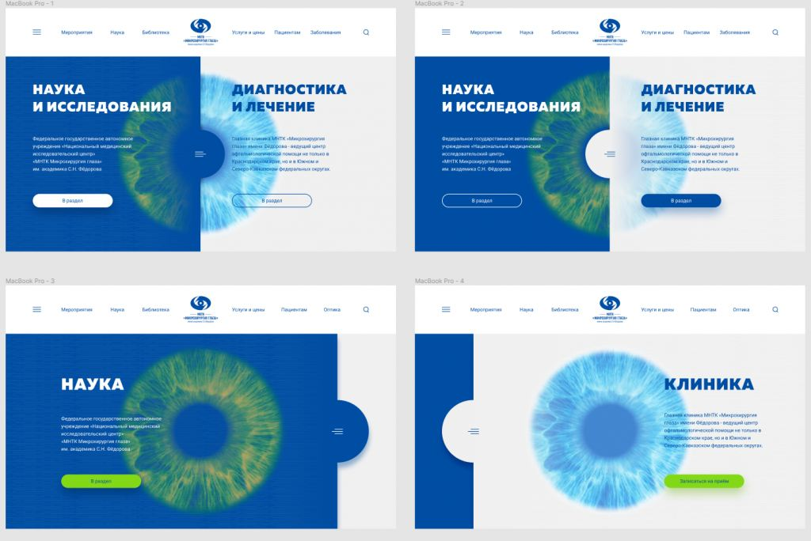
Концепция №2
От первой концепции мы отказались по следующим причинам:
- основной посетитель сайта всё-таки пациент, нужен основной фокус на них как в принципе, так и в навигации
- вместо двух основных направлений логичнее выделить основные разделы: диагностика и лечение заболеваний зрения, отделения и врачи, образование, наука и исследования
- использование подобного дизайна (особенно крупного изображения роговицы) сильно пересекается с конкурентами, не позволяет визуально от них отстроиться
Так мы пришли ко второму концепту, который был принят в работу.
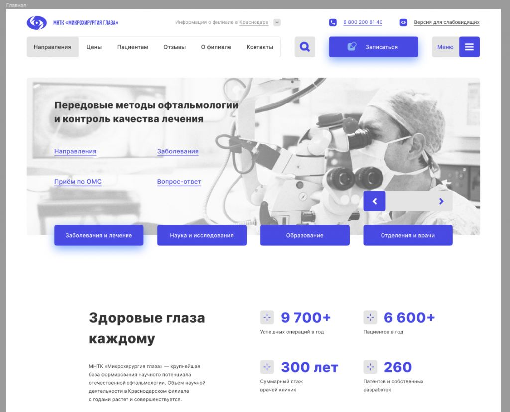
Погружение в контекст
Есть один этап при реализации проекта, от которого очень сильно зависит качество результата, особенно в сложных сферах. Речь идёт о погружении в контекст предметной области клиента.
Разработка сайта краснодарского филиала МНТК отлично демонстрирует важность такой работы. Погружение в контекст даёт необходимую для верных решений экспертизу, сокращает вероятность фактических ошибок, позволяет мыслить шире.
Без общих знаний об офтальмологии, без изучения богатейшей истории клиники, без осознания огромного вклада и гигантского масштаба личности основателя, Святослава Николаевича Фёдорова, не было бы тех эмоций, что сопровождали нас по ходу работы. Восторг, удивление и гордость были нашими помощниками, и потому мы старались изо всех сил.
Советуем к просмотру пару документальных фильмов о Святославе Николаевиче Фёдорове. Рекомендуем лично.
«Слава Фёдоров». Фильм к 90-летию со дня рождения С.Н. Федорова
Видеть свет. Святослав Федоров
Проектирование
Очень большой объём работы — основная проблема, с которой мы столкнулись при разработке прототипа. Если память мне не изменяет, это самый большой сайт по количеству страниц, разработанный в нашей студии.
Взгляните на структуру страниц сайта, вы поймёте эмоции наших дизайнеров. Посмотреть детальную структуру проекта можно здесь.
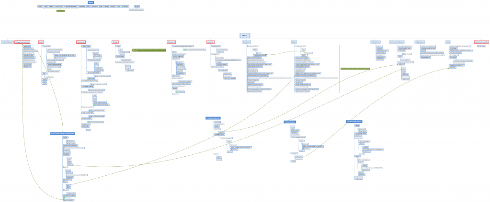
Для того, чтобы спроектировать, да и в принципе разработать такой объём страниц в адекватные сроки, мы придерживались некоторых правил.
1) атомарность интерфейса
Если можешь использовать уже спроектированный блок - не делай новый.
Если 2 разных блока используются с одной и той же целью - подумай, нельзя ли сделать из них один.
Закончил страницу - дополни библиотеку уже готового интерфейса.
Начинаешь новую страницу - попробуй скомпоновать её из уже готового интерфейса, и только потом дополняй.
В результате ненужные компоненты вовремя удаляются или переделываются, и каждая следующая страница производится всё быстрее и быстрее. Это верно для всех последующих стадий разработки, не только для прототипа.
2) проектируем с приоритетом по убыванию
Сначала строим основные пользовательские пути до основной конверсии, и проектируем те страницы и блоки, через которые он проходит.
Начинаем делать остальное, если можем на прототипе пройти все предполагаемые пути пользователя от главной до записи.
Этот принцип позволяет чётко держать фокус команды на максимально важных страницах, которые определяют основную логику сайта, без распылений на те элементы, что могут в релиз и не пойти.
3) согласуем по готовности, отправляем в дизайн и вёрстку уже согласованное
Делим крупный объём на несколько самостоятельных спринтов, согласовываем состав с клиентом, договариваемся, что согласованное не меняется.
В результате команда не ждёт, когда прототип будет полностью готов, а работает параллельно сразу после согласования первого набора страниц.
4) боевой контент по максимуму
Нужно для минимизации риска «боевой контент разорвал страницу в клочья». Да, такое бывает часто, и чревато задержкой релиза на 2-4 недели (привет, ретроградные баги) поэтому уже на этапе прототипа рекомендуем либо использовать боевой контент, либо имитировать его.
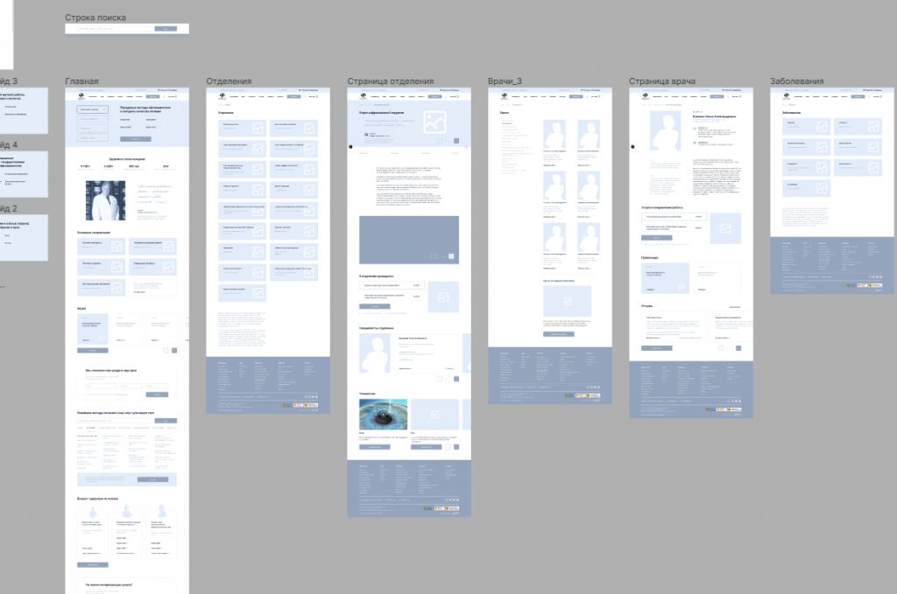
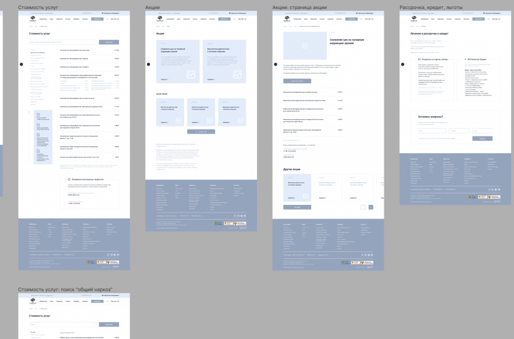
Дизайн
Требований к макетам для этого сайта были куда шире, чем на проектах, никак не связанных с заболеваниями зрения и со здравоохранением в принципе.
у значительного количества пользователей есть нарушения зрения
очень большой диапазон возраста посетителей сайта
государственные органы требуют размещать определённый контент, определённые ссылки и документы на сайтах лечебных учреждений
процесс записи для пользователя изначально сложный: интерфейс формы зависит от возраста пациента, источника финансирования (полис ОМС, талоны на высококвалифицированную медицинскую помощь, личные средства пациента)
При создании концепции мы учитывали все перечисленные требования, рекомендации фирменного стиля, и старались сделать дизайн максимально простым, доступным и контрастным, при этом сделать его интересным, современным, в соответствии со статусом МНТК. Цитирую арт-директора NUTS Digital: «Делаем современность, но сохраняем государственность».
В первую очередь отказались от всего, что может помешать восприятию контента: мелкие детали, сложные анимации и другие стилистические изыски, отягощающие дизайн. Простота — залог комфорта пользователя вне зависимости от возраста и уровня владения веб-технологиями.
Читаемость сочетания текста и фона определяется в дизайне интерфейсов с помощью уровня контрастности. Самый высокий из них — AAA, именно такой коэффициент у сайта краснодарского филиала МНТК.
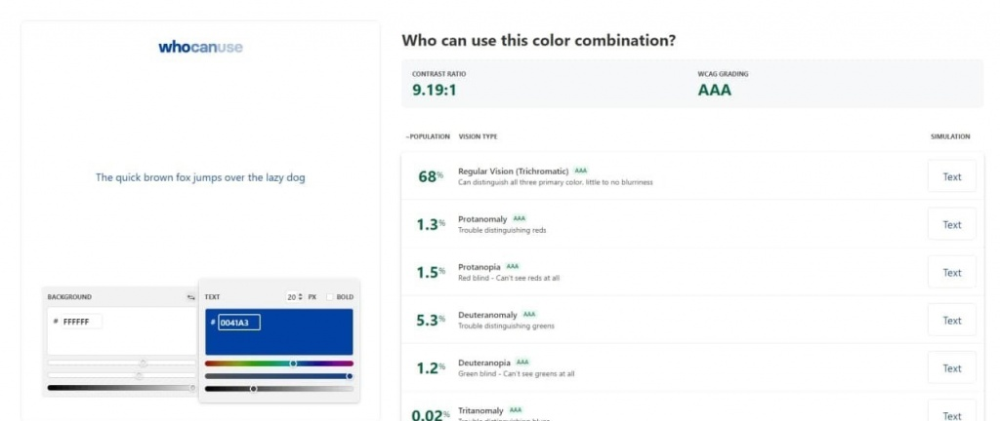
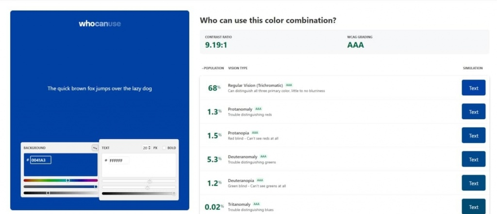
Отдельно отметим проработку страниц с большим объёмом скучного, но полезного к ознакомлению текста: правила приёма, подготовка к операции и т.п. Отдельно проработаны заголовки нескольких уровней, иконки и акценты на наиболее важные части: всё для того, чтобы сделать чтение приятным, а не утомительным, и с высокой вероятностью донести информацию до пользователя.
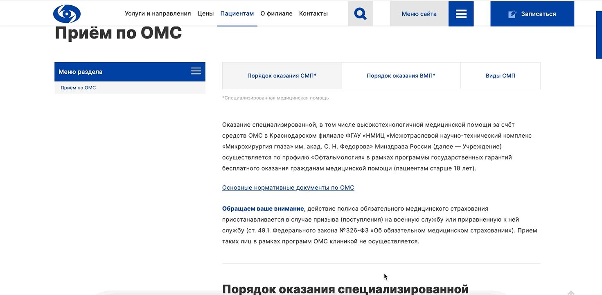
Теперь немного о навигации. Напомню, сайт очень большой, и сделать удобную и полную навигацию было весьма непросто. Мы с задачей справились следующим образом: вынесли в «шапку» сайта наиболее важные для пациента разделы с выпадающими разделами по наведению и поиск по сайту. Остальную навигацию, контакты филиала и ссылки на социальные сети разместили в подробном меню с быстрым поиском. В конце каждой страницы также есть навигационный блок с наиболее полезными для пациента ссылками.
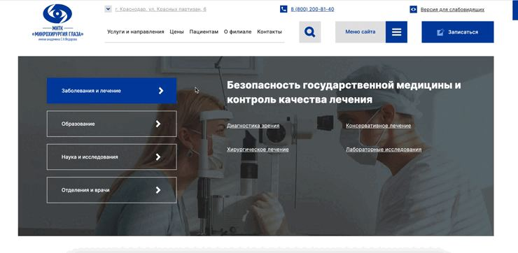
Обязательные для сайтов государственных учреждений здравоохранения ссылки размещены в футере, а обязательные к публикации документы и контакты на страницах «Сведения о медицинской организации» и «Вышестоящие и контролирующие органы».
Онлайн-запись
Вишенка на дизайнерском торте, самый сложный интерфейс на всём сайте, который нужно максимально упростить и сделать предельно понятным для пользователя любого возраста и опыта.
поделили запись на 3 шага: выбор направления и источника финансирования, выбор даты и времени приёма, ввод данных пациента и финальная проверка перед отправкой записи. При прохождении формы указанные пользователем данные сохраняются в блок «Информация о записи»
добавили визуальные подсказки для поиска нужных номеров на полисах старого и нового образца, текстовые пометки о важных деталях
разместили ссылки на правила приёма и госпитализации для ознакомления перед или после записи, добавили блок с важной информацией перед вводом данных пациента
выбор даты и времени ограничен в соответствии с правилами МНТК и реальным расписанием
после записи выводим подробную информацию с полезными ссылками, предлагаем продолжить исследовать сайт с помощью слайдеров «Акции и новости» и «Основные направления»
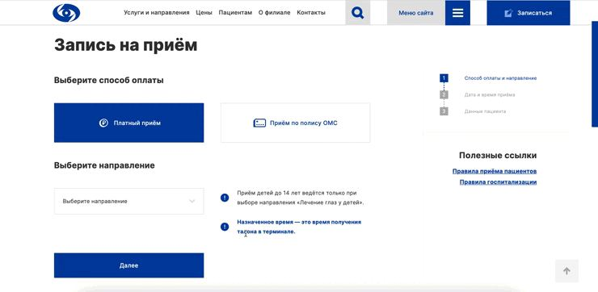
Вёрстка и сборка
Сайт свёрстан на классическом стеке, HTML + CSS + JavaScript. Страницы адаптивны, и подстраиваются под размер экрана устройства пользователя.
Особое внимание уделено доступности. У большинства картинок заполнен тег alt с текстовым описанием картинки, использованы семантически верные теги HTML (кнопки в теге button, заголовки в теге heading и т.д.). Всё это нужно для тех, кто из-за слабого зрения использует скрин-ридер — устройство для чтения содержимого страниц сайта.
Также на сайт установлена библиотека для переключения в режим для слабовидящих. В таком режиме можно выбрать подходящую цветовую схему, включать/выключать и делать чёрно-белыми изображения, доступно полное управление форматированием текста: изменение шрифта, его размеров, межстрочного и межбуквенного интервала. Библиотека соответствует ГОСТ Р 52872-2012 «Интернет-ресурсы. Требования доступности для инвалидов по зрению».
Сайт интегрирован с медицинской системой MediHost, получает список направлений для записи и актуальное расписание, отправляет данные о записи пациентов.
При разработке серверной части вместо Битрикса мы использовали OctoberCMS.
Из админки управляется абсолютно всё: редактируется и дополняется структура сайта, заполняются страницы врачей и направлений, сохраняются данные о заказах звонка и записях на приём, изменяются услуги и цены на них, модерируются отзывы, и, конечно же, есть вкладка SEO с важными для поискового продвижения тегами и параметрами.
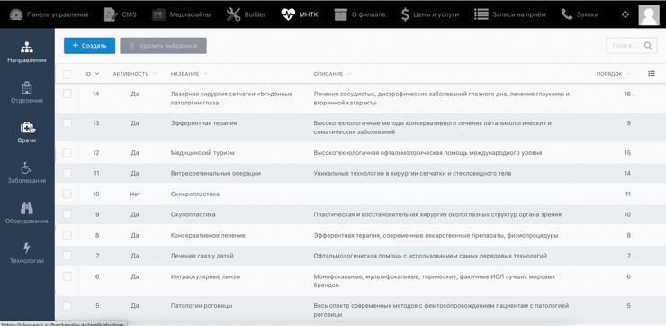
Разумеется, сайт прошёл несколько циклов тестирования и отладки.
Перед релизом сайта совместно с командой МНТК заполнили все страницы контентом, и проверили сайт на соответствие всем нормативным актам, регулирующих обязательную информацию на сайтах медицинских организаций.
Привожу их список ниже, вдруг пригодится :-)
- Федеральный закон № 326-ФЗ от 29.11.2010 г.
- Федеральный закон № 323-ФЗ от 21.11.2011 г.
- Указ Президента РФ №601 от 07.05.2012 г. Указ Президента РФ №597 от 07.05.2012 г.
- Приказ Минздрав РФ №956-н от 30.12.2014 г.
- Приказ Минздрав РФ №240 от 14.05.2015 г.
- Федеральный закон №392-ФЗ от 05.12.2017 г.
- Приказ Минздрав РФ №201-н от 04.05.2018 г.
- Приказ ФФОМС № 36 от 28.02.2019 г.
Результат
Теперь у краснодарского филиала МНТК адаптивный и современный сайт, отражающий наследие и уникальную позицию всей системы клиник Фёдорова в мировой офтальмологии и в системе здравоохранения России. Сайтом могут использовать люди с заболеваниями зрения и без них, проблемы с продвижением и развитием удалось решить.
Приглашаем вас оценить результат совместной работы NUTS Digital и краснодарского филиала МНТК на okocentr.ru
Благодарности
Огромное спасибо директору Краснодарского филиала МНТК Сахнову Сергею Николаевичу заведующей отделением лазерной коррекции зрения Клоковой Ольге Александровне, руководителю отдела маркетинга Радышевскому Евгению Александровичу, и всей команде МНТК за ваш благородный труд и помощь при разработке сайта.
Конечно же, отдельная благодарность команде NUTS Digital, вы самые лучшие!